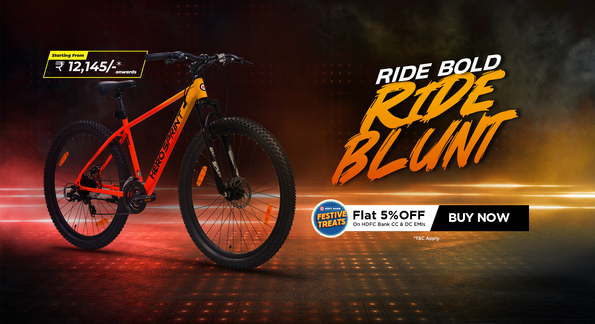

Elevate Your Ride Experience with Hero Cycles
Shop Cycle from India s Most Trusted Cycle Brand
If youre looking to buy a bicycle for yourself or a surprise for your little one choose the best from India’s top cycle brand. Hero Cycles have a vast range of MTB Bikes, Kids Cycles, Geared Bicycles, Electric Cycles, Ladies Cycle or City Bikes Hero Cycles has range to offer.
Popular Search
• Cycle for Kids
• Best MTB Cycle
• Best City Bikes
• Cycle under Rs 10000
• Ladies Bicycle
• Best Boys Cycle
• MTB Cycles Under Rs 20000
• Hero E-Cycles
Hero Cycles Category
• Kids Bicycles:
Give your child safe and reliable bikes with Hero Kids Bicycles. These bikes come with lightweight frames that are easy for kids to handle, fun to ride and feature adjustable saddles and handlebars that can be customized to fit their growing bodies. The bicycles come with vibrant colors and designs that are sure to appeal to kids. The best-sellers are hero whistle, hero doraemon blossom and doraemon flower.
• City Bikes
Enjoy your urban rides with City Bikes from Hero cycles. Huge collection of city bikes that are built for everyday use, from Morning Rides to Office Commute. Among the best-selling models Hero Milano, Hero Urban Trail, and Hero Atlanta. These bikes are built with high-quality Light weight frames that can withstand the wear and tear of daily use. Comes with 700C tyres with geared and non-geared options.
• Best MTB Cycles
Enjoy your all terrain rides from Hilly mountain rides to off roads thrills with Hero Cycles Mountain bikes. These bicycles are loaded with world class components like shimano gear, Spur Suspension. With a vast collection of MTB cycles to choose from, Hero Cycles offers something for every level of rider, from beginners to professionals.
Frequently asked
QUESTIONS ?
• HOW CAN I PLACE AN ORDER ON HERO CYCLES?
• WHICH IS THE BEST CYCLES BRAND IN INDIA?
• HOW MUCH DOES A HERO CYCLE COST?
• HOW MANY GEARS ARE THERE IN HERO SPRINT?
• WHICH IS THE BEST HERO CYCLE UNDER 10000?
.png)
POPULAR SEARCHES
Bikes|mountain|city|roadster|hybrid|men|women|kids|e-bikes|adventure|commute|fitness|recreation|racing|gear|non-gear|no-bike accessories|rider accessories|virtual assistance|events|
BUY HERO CYCLES ONLINE
If you’re looking to buy cycles for men, women, or kids online, look no further than the best cycles brand in India! Whether geared or gearless, city or MTB, and no matter your budget, the Hero Cycles website has bikes or accessories that suit your every requirement!
THE WORLD'S NO. 1 CYCLING BRAND
For all your cycling needs, look no further than Hero Cycles. We're the best cycles brand in India with the largest share in the Indian market. Whether you're a beginner or a seasoned pro, we have the perfect cycle for you. Get out there and start pedalling!